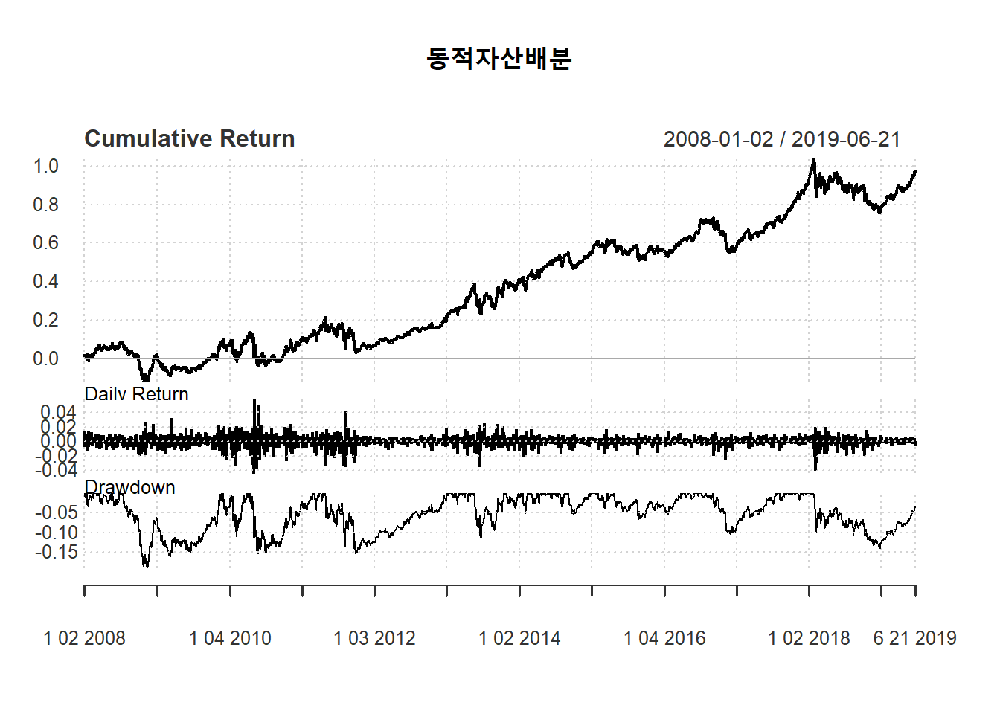
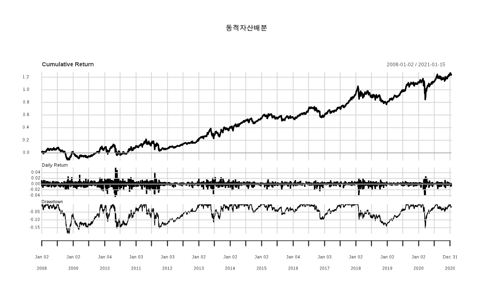
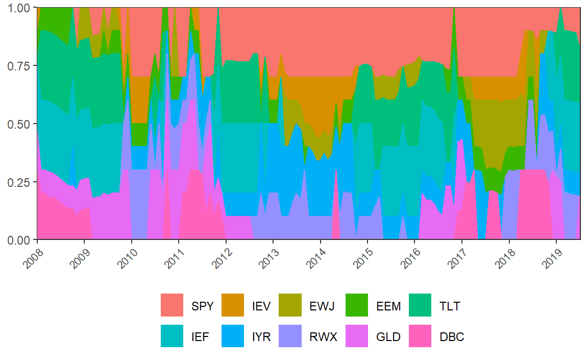
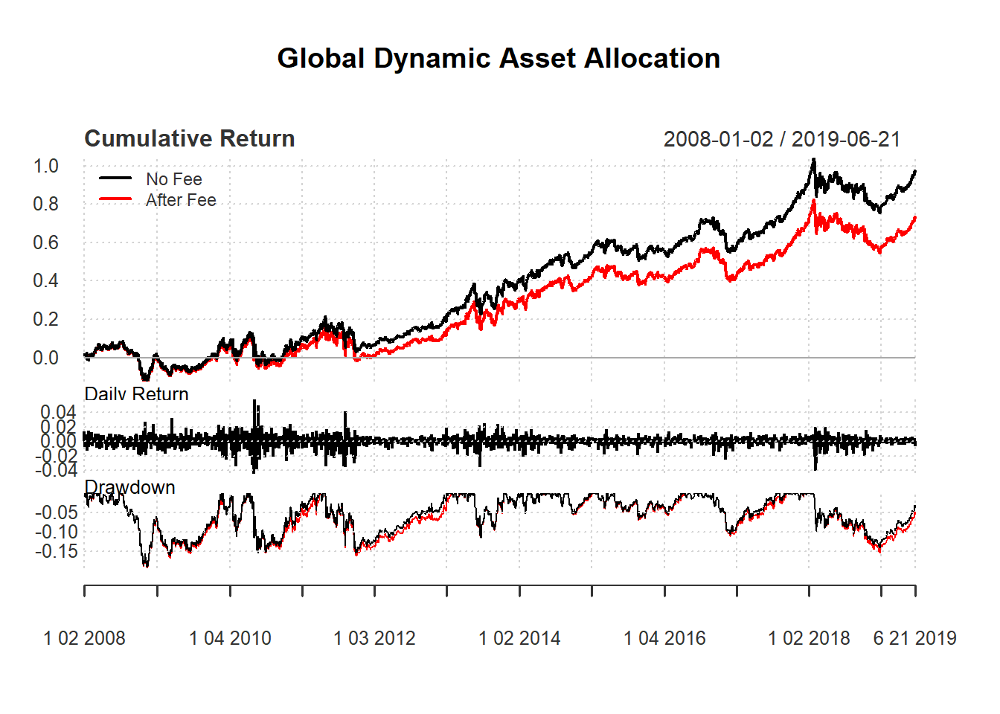

Chapter 12 포트폴리오 백테스트
백테스트란 현재 생각하는 전략을 과거부터 실행하였을 시, 어떠한 성과가 발생하는지 테스트해보는 과정입니다. 과거의 데이터를 기반으로 전략을 실행하는 퀀트 투자에 있어서, 이는 핵심 단계이기도 합니다. 백테스트 결과를 통해 해당 전략의 손익뿐만 아니라 각종 위험을 대략적으로 판단할 수 있으며, 어떤 구간에서 전략이 좋았는지 혹은 나빴는지에 대한 이해도 키울 수 있습니다. 이러한 이해를 바탕으로 퀀트 투자를 지속한다면 단기적으로 수익이 나쁜 구간에서도 그 이유에 대한 객관적인 안목을 키울 수 있으며, 확신을 가지고 전략을 지속할 수 있습니다.
그러나 백테스트를 아무리 보수적으로 혹은 엄밀하게 진행하더라도 이미 일어난 결과를 대상으로 한다는 점에서 정답을 보고 답지를 쓰는 격이라는 점을 항상 명심해야 합니다. 백테스트 수익률만을 보고 투자에 대한 판단을 하거나, 혹은 동일한 수익률이 미래에도 반복될 것이라 믿는다면 이는 백미러를 보고 운전을 하는 매우 위험한 결과를 초래할 수도 있습니다.
R에서 백테스트는 PerformanceAnalytics 패키지 내의 Return.portfolio() 함수를 사용하여 매우 간단하게 수행할 수 있습니다. 이번 장에서는 해당 함수에 대한 이해와 더불어, 구체적인 사용 방법에 대한 예시로써 전통적인 주식 60% & 채권 40% 포트폴리오, 시점 선택 전략, 동적 자산배분에 대한 백테스트를 실행합니다.
12.1 Return.Portfolio() 함수
프로그래밍을 이용하여 백테스트를 할 경우, 전략이 단순하다면 단 몇 줄 만으로도 테스트가 가능합니다. 그러나 전략이 복잡해지거나 적용해야 할 요소가 많아질 경우, 패키지를 이용하는 것이 효율적인 방법입니다.
PerformanceAnalytics 패키지의 Return.portfolio() 함수는 백테스트 과정에서 가장 대중적으로 사용되는 함수입니다. 해당 함수의 가장 큰 장점은 각 자산의 수익률과 리밸런싱 비중만 있으면 백테스트 수익률, 회전율 등을 쉽게 계산할 수 있다는 점이며, 리밸런싱 시점과 수익률의 시점이 일치하지 않아도 된다는 점입니다. 즉, 수익률 데이터는 일간, 리밸런싱 시점은 분기 혹은 연간으로 된 경우에도 매우 쉽게 백테스트를 수행할 수 있습니다.
12.1.1 인자목록 살펴보기
먼저 Return.portfolio() 함수는 다음과 같은 형태로 구성되어 있으며, 표 12.1는 인자의 내용을 정리한 것입니다.
Return.portfolio(R, weights = NULL, wealth.index = FALSE,
contribution = FALSE, geometric = TRUE, rebalance_on = c(NA, "years",
"quarters", "months", "weeks", "days"), value = 1, verbose = FALSE, ...)| 인자 | 내용 |
|---|---|
| R | 각 자산 수익률 데이터 |
| weights | 각 리밸런싱 시기의 자산 별 목표 비중. 미 입력시 동일비중 포트폴리오를 가정하여 백테스트가 이루짐 |
| wealth.index | 포트폴리오 시작점이 1인 wealth index에 대한 생성여부이며, 디폴트는 FALSE로 설정 |
| contribution | 포트폴리오 내에서 각 자산 별 성과기여를 나타내는지에 대한 여부이며, 디폴트는 FALSE로 설정 |
| geometric | 포트폴리오 수익률 계산시 복리(기하)수익률 적용 여부이며, 디폴트는 TRUE로써 복리수익률을 계산 |
| rebalance_on | weight 값이 미입력 혹은 매번 같은 비중일 경우, 리밸런싱 주기를 선택할 수 있음 |
| value | 초기 포트폴리오 가치를 의미하며, 디폴트는 1 |
| verbose | 부가적인 결과를 표시할지에 대한 여부. 디폴트인 FALSE를 입력할 경우 포트폴리오 수익률만이 시계열 형태로 표시되며, TRUE를 입력할 경우 수익률 외에 자산 별 성과기여, 비중, 성과 등이 리스트 형태로 표현됨 |
이 중 가장 중요한 인자는 개별 자산의 수익률인 R과 리밸런싱 시기의 자산 별 목표 비중인 weights 입니다. 매 리밸런싱 시점마다 적용되는 자산 별 비중이 동일할 경우(예: 매월 말 60%대 40% 비중으로 리밸런싱) 상수 형태로 입력하여도 되지만, 시점마다 자산 별 목표비중이 다를 경우 weights는 시계열 형태로 입력되어야 합니다.
목표 비중을 시계열 형태로 입력할 경우 주의해야 할 점은 다음과 같습니다.
- 시계열 형태로 인식할 수 있도록, 행이름 혹은 인덱스가 날짜 형태로 입력되어야 합니다.
- 수익률 데이터와 비중 데이터의 열 개수는 동일해야 하며, 각 열에 해당하는 자산은 동일해야 합니다. 즉, 수익률 데이터의 첫번째 열에 A주식 데이터가 있다면, 비중 데이터의 첫번째 열도 목표 A주식 비중을 입력해야 합니다.
- 각 시점의 비중의 합은 1이 되어야 합니다. 그렇지 않을 경우 제대로된 수익률이 계산되지 않습니다.
weights에 값을 입력하지 않을 동일비중 포트폴리오를 구성하며, 포트폴리오 리밸런싱은 하지 않습니다.
12.1.2 출력값 살펴보기
해당 함수는 verbose를 TRUE로 설정할 경우 다양한 결과값을 리스트 형태로 반환합니다.
| 결과 | 내용 |
|---|---|
| returns | 포트폴리오 수익률 |
| contribution | 일자 별 개별 자산의 포트폴리오 수익률 기여도 |
| BOP.Weight | 일자 별 개별 자산의 포트폴리오 내 비중 (시작시점). 리밸런싱이 없을 시 직전 기간 EOP.Weight와 동일 |
| EOP.Weight | 일자 별 개별 자산의 포트폴리오 내 비중 (종료시점) |
| BOP.Value | 일자 별 개별 자산의 가치 (시작시점). 리밸런싱이 없을 시 직전 기간 EOP.Value와 동일 |
| EOP.Value | 일자 별 개별 자산의 가치 (종료시점) |
12.2 전통적인 60대 40 포트폴리오 백테스트
Return.portfolio() 함수의 가장 간단한 예제로써 전통적인 60대 40 포트폴리오를 백테스트 하도록 합니다. 해당 포트폴리오는 주식과 채권에 각각 60%와 40%를 투자하며, 특정 시점 마다 해당 비중을 맞춰주기 위해 리밸런싱을 수행합니다. 매해 말 리밸런싱을 가정하는 예제를 살펴보도록 하겠습니다.
library(quantmod)
library(PerformanceAnalytics)
library(magrittr)
ticker = c('SPY', 'TLT')
getSymbols(ticker)## [1] "SPY" "TLT"prices = do.call(cbind, lapply(ticker, function(x) Ad(get(x))))
rets = Return.calculate(prices) %>% na.omit()글로벌 자산의 ETF 데이터 중 주식(S&P 500)과 채권(미국 장기채)에 해당하는 데이터를 다운로드 받은 후, 수익률을 계산하도록 합니다.
cor(rets)## SPY.Adjusted TLT.Adjusted
## SPY.Adjusted 1.000000 -0.434726
## TLT.Adjusted -0.434726 1.000000cor() 함수를 통해 두 자산간의 상관관계를 확인해보면 -0.43로써 매우 낮은 상관관계를 보이며, 강한 분산효과를 기대해볼 수 있습니다.
portfolio = Return.portfolio(R = rets,
weights = c(0.6, 0.4),
rebalance_on = 'years',
verbose = TRUE)Return.portfolio() 함수를 이용하여 백테스트를 실행합니다.
- 자산의 수익률인 R에는 수익률 테이블인 rets 를 입력합니다.
- 리밸런싱 비중인 weights에는 60%와 40%를 의미하는 c(0.6, 0.4)를 입력합니다.
- 리밸런싱 시기인 rebalance_on에는 연간 리밸런싱에 해당하는 ‘years’를 입력합니다. 리밸런싱 주기는 이 외에도 ’quarters’, ‘months’, ‘weeks’, ’days’도 입력이 가능합니다.
- 결과물들을 리스트로 확인하기 위해 verbose를 TRUE로 설정합니다.
위 과정을 통해 주식과 채권 투자 비중을 각각 60%와 40%로 리밸런싱하는 포트폴리오의 백테스트가 실행됩니다. 표 12.3는 함수 내에서 포트폴리오의 수익률이 어떻게 계산되는지를 요약한 과정입니다.
| 1.주식 | 2.채권 | 3.1+2 | 4.주식 | 5.채권 | 6.주식 | 7.채권 | 8.주식 | 9.채권 | 10.8+9 | 11.주식 | 12.채권 | 13.수익률 | |
|---|---|---|---|---|---|---|---|---|---|---|---|---|---|
| 2017-12-26 | 1.603 | 0.940 | 2.543 | 0.630 | 0.370 | -0.001 | 0.003 | 1.601 | 0.943 | 2.544 | 0.629 | 0.371 | 0.000 |
| 2017-12-27 | 1.601 | 0.943 | 2.544 | 0.629 | 0.371 | 0.000 | 0.013 | 1.602 | 0.956 | 2.557 | 0.626 | 0.374 | 0.005 |
| 2017-12-28 | 1.602 | 0.956 | 2.557 | 0.626 | 0.374 | 0.002 | -0.001 | 1.605 | 0.955 | 2.560 | 0.627 | 0.373 | 0.001 |
| 2017-12-29 | 1.605 | 0.955 | 2.560 | 0.627 | 0.373 | -0.004 | 0.002 | 1.599 | 0.956 | 2.555 | 0.626 | 0.374 | -0.002 |
| 2018-01-02 | 1.533 | 1.022 | 2.555 | 0.600 | 0.400 | 0.007 | -0.011 | 1.544 | 1.011 | 2.555 | 0.604 | 0.396 | 0.000 |
| 2018-01-03 | 1.544 | 1.011 | 2.555 | 0.604 | 0.396 | 0.006 | 0.005 | 1.554 | 1.016 | 2.570 | 0.605 | 0.395 | 0.006 |
먼저 2017-12-27일에 해당하는 데이터를 보면 시작시점에 주식과 채권에는 각각 1.601과 0.943이 투자되어 있으며, 이를 합하면 2.544이 됩니다. 이를 포트폴리오 내 비중으로 환산하면 비중은 각각 0.629과 0.371가 됩니다.
해당일의 주식과 채권의 수익률은 각각 0, 0.013이 되며, 이를 시작금액에 곱하면 종료시점의 금액은 1.602과 0.956가 됩니다. 각각의 금액을 종료금액의 합인 2.557으로 나누게 되면, 포트폴리오 내 비중은 0.626, 0.374로 변하게 됩니다. 포트폴리오 수익률은 2017-12-27 포트폴리오 금액인 2.557을 전일의 포트폴리오 금액인 2.544로 나누어 계산된 값인 0.005가 됩니다.
리밸런싱이 없다면 2017-12-27일의 종료금액과 종료비중은 2017-12-28일의 시작금액과 시작비중에 그대로 적용되며, 위와 동일한 단계를 통해 포트폴리오 수익률이 계산됩니다.
그러나 매해 리밸런싱을 가정했으므로, 첫 영업일인 2018-01-02일에는 포트폴리오 리밸런싱이 이루어집니다. 따라서 전일 2017-12-29일의 종료금액의 합인 2.555을 사전에 정의한 0.6과 0.4에 맞게 각 자산을 시작시점에 매수 혹은 매도하게 됩니다. 이후에는 기존과 동일하게 해당일의 수익률을 곱해 종료시점의 금액과 비중을 구한 후, 포트폴리오 수익률을 계산하게 됩니다.
리밸런싱 전일 종료시점의 비중과 리밸런싱 당일 시작시점의 비중 차이의 절대값을 합하면, 포트폴리오의 회전율을 계산할 수도 있습니다. 해당 예제에서는 2017-12-29일 종료시점의 비중인 0.626, 0.374와 2018-01-02일 시작시점의 비중인 0.6, 0.4의 차이인 0.026, -0.026의 절대값의 합계인 0.052가 회전율이 됩니다.
이처럼 리밸런싱을 원하는 시점과 비중을 정의하면, Return.portfolio() 함수 내에서는 위의 단계를 거쳐 포트폴리오의 수익률, 시작과 종료시점의 금액 및 비중이 계산되며, 이를 응용하여 회전율을 계산할 수도 있습니다.
portfolios = cbind(rets, portfolio$returns) %>%
setNames(c('주식', '채권', '60대 40'))
charts.PerformanceSummary(portfolios, main = '60대 40 포트폴리오')
PerformanceAnalytics 패키지의 charts.PerformanceSummary() 함수는 기간별 수익률을 입력시 누적수익률, 일별수익률, 드로우다운 그래프를 자동으로 그려줍니다.
검은색 그래프는 주식 수익률(SPY), 붉은색 그래프는 채권 수익률(TLT), 초록색 그래프는 60대 40 포트폴리오 수익률을 의미합니다. 주식과 채권은 상반되는 움직임을 보이며 상승하며, 분산투자 포트폴리오는 각 개별 자산에 비해 훨씬 안정적인 수익률을 보입니다.
turnover = xts(rowSums(abs(portfolio$BOP.Weight -
timeSeries::lag(portfolio$EOP.Weight)), na.rm = TRUE),
order.by = index(portfolio$BOP.Weight))
chart.TimeSeries(turnover)
전일 종료시점의 비중인 EOP.Weight를 lag() 함수를 이용해 한 단계씩 내린 후, 시작시점의 비중인 BOP.Weight와의 차이의 절대값을 더해주면 해당 시점에서의 회전율이 계산됩니다. lag() 함수의 경우 dplyr 패키지에도 동일한 이름의 함수가 존재하므로, 충돌을 방지하기 위해 timeSeries 패키지의 함수임을 선언해줍니다. 이를 xts() 함수를 이용해 시계열 형태로 만들어준 뒤, chart.TimeSeries() 함수를 이용해 그래프로 나타내줍니다.
리밸런싱 시점에 해당하는 매해 첫 영업일에 회전율이 발생하며, 그렇지 않은 날은 매수 혹은 매도가 없으므로 회전율 역시 0을 기록합니다. 2008년에는 주식과 채권의 등락폭이 심하였으므로 이듬해엔 2009년 리밸런싱으로 인한 회전율이 심하지만, 이를 제외한 해는 회전율이 그리 심하지 않습니다.
12.3 시점 선택 전략 백테스트
이전 테스트가 리밸런싱 시점 별 비중이 60%와 40%로 고정되어 있었다면, 이번에는 시점 별 비중이 다른 형태의 예제를 살펴보도록 하겠습니다.
메브 파버(Meb Faber)는 본인의 논문1을 통해, 시점 선택(Market Timing) 전략을 사용할 경우 단순 매수 후 보유 대비 극심한 하락장에서 낙폭을 줄일 수 있으며, 이로 인해 위험 대비 수익률을 올릴 수 있다고 설명합니다. 논문에서 말하는 시점 선택의 투자 규칙은 다음과 같습니다.
\[주가 > 10개월\,이동평균 \to 매수 \\ 주가 < 10개월\,이동평균 \to 매도\,및\,현금\,보유\]
해당 규칙을 미국 S&P 500에 적용하는 예제를 살펴보도록 하겠습니다. 현재 주식 가격이 과거 10개월 주식 가격의 단순 평균 대비 이상이면 매수, 그렇지 않으면 전량 매도 후 현금을 보유하는 전략이며, 리밸런싱은 매월 말에 실행하도록 합니다.
library(quantmod)
library(PerformanceAnalytics)
symbols = c('SPY', 'SHY')
getSymbols(symbols, src = 'yahoo')## [1] "SPY" "SHY"prices = do.call(cbind, lapply(symbols, function(x) Ad(get(x))))
rets = na.omit(Return.calculate(prices))먼저 주식과 현금에 해당하는 ETF 데이터를 다운로드 받습니다. 주식에 해당하는 ETF로는 S&P 500 수익률을 추종하는 SPY를 사용하며, 현금에 해당하는 ETF로는 미국 단기채 수익률을 추종하는 SHY를 사용합니다.
ep = endpoints(rets, on = 'months')
print(ep)## [1] 0 19 38 60 80 102 123 144 167 186 209 230 250 271
## [15] 291 311 333 354 375 397 418 439 462 481 503 523 542 564
## [29] 585 605 627 649 670 691 713 733 755 774 793 816 837 857
## [43] 879 900 922 943 964 985 1007 1027 1046 1069 1089 1110 1132 1152
## [57] 1175 1196 1217 1238 1259 1279 1299 1321 1341 1363 1384 1405 1428 1447
## [71] 1468 1489 1509 1530 1549 1569 1591 1613 1633 1655 1677 1697 1720 1740
## [85] 1761 1782 1801 1822 1843 1864 1885 1907 1928 1949 1972 1991 2013 2033
## [99] 2052 2074 2095 2115 2137 2159 2180 2201 2223 2243 2265 2284 2304 2326
## [113] 2347 2368 2390 2410 2433 2454 2475 2496 2517 2537 2556 2579 2598 2620
## [127] 2642 2662 2685 2705 2727 2748 2768 2789 2808 2829 2850 2872 2893 2914
## [141] 2937 2956 2979 3000 3019 3040 3059 3080 3101 3123 3138wts = list()
lookback = 10먼저 xts 패키지의 endpoints() 함수를 이용해 매월 말일의 위치를 구합니다. 해당 함수는 endpoints(x, on= 'months', k=1)의 형태로 이루어지며 x는 시계열 데이터, on은 원하는 기간, k는 구간 길이를 의미합니다. 즉, 시계열 데이터에서 월말에 해당하는 부분의 위치를 반환하며, 매 월이 아닌 ‘weeks’, ‘quarters’, ‘years’ 등도 입력이 가능합니다.
결과적으로 ep에는 rets의 인덱스 중 매월 말일에 해당하는 부분의 위치가 구해집니다.
각 시점 별 비중이 입력될 wts를 공백의 리스트 형식으로 저장해주며, n개월 이동평균 값에 해당하는 lookback 변수에는 10을 입력해 줍니다.
i = lookback + 1
sub_price = prices[ep[i-lookback] : ep[i] , 1]
head(sub_price, 3)## SPY.Adjusted
## 2007-01-03 109.5034
## 2007-01-04 109.7357
## 2007-01-05 108.8605tail(sub_price, 3)## SPY.Adjusted
## 2007-10-26 120.5480
## 2007-10-29 120.9483
## 2007-10-30 120.1086sma = mean(sub_price)
wt = rep(0, 2)
wt[1] = ifelse(last(sub_price) > sma, 1, 0)
wt[2] = 1 - wt[1]
wts[[i]] = xts(t(wt), order.by = index(rets[ep[i]]))해당 전략은 for loop 구문을 통해, 매월 말 과거 10개월 이동평균을 구한 후 매수 혹은 매도를 선택한 후 비중을 계산합니다. 예시를 위해 첫번째 시점의 테스트 과정을 살펴보도록 하며, 과거 10개월에 해당하는 가격의 이동평균이 필요하므로 처음 시작은 i+1 인 11 부터 가능합니다.
- 주가는 일별 데이터이며, 현재부터 과거 10개월에 해당하는 주가를 선택해야 합니다. 앞서
endpoints()함수를 통해 주가에서 월말 기준점의 위치를 찾았으며, ep[i]는 현재시점 주가의 위치를, ep[i-lookback]는 현재부터 10개월 전 주가 위치를 의미합니다. 이를 통해 과거 10개월 간 주가를 찾은 후 sub_price에 저장하도록 합니다. mean()을 통해 10개월 주가의 평균을 계산합니다.rep(0, 2)를 통해 비중이 들어갈 0 벡터를 생성해 줍니다.ifelse()구문을 통해 해당 전략의 조건에 맞는 비중을 계산합니다. wt[1]은 주식의 투자비중이며, 만일 현재 주가가 10개월 이동평균보다 클 경우, 주식에 해당하는 비중은 1을, 그렇지 않을 경우 0을 부여합니다. wt[2]는 현금의 투자비중이며, 1에서 주식의 투자비중을 뺀 값을 입력합니다. 표 12.4는 해당 규칙이 요약되어 있습니다.- 위에서 만들어진 벡터를
xts()를 통해 시계열 형태로 바꾼 후, wts의 i번째 리스트에 저장해줍니다.
| 자산 | 현재주가 > 10개월 이동평균 | 현재 주가 < 10개월 이동평균 |
|---|---|---|
| 주식비중 | wt[1] = 1 | wt[1] = 0 |
| 현금비중 | wt[2] = 0 | wt[2] = 1 |
위 과정을 for loop 구문을 통해 전체 기간에 적용한 백테스트는 다음과 같습니다.
ep = endpoints(rets, on = 'months')
wts = list()
lookback = 10
for (i in (lookback+1) : length(ep)) {
sub_price = prices[ep[i-lookback] : ep[i] , 1]
sma = mean(sub_price)
wt = rep(0, 2)
wt[1] = ifelse(last(sub_price) > sma, 1, 0)
wt[2] = 1 - wt[1]
wts[[i]] = xts(t(wt), order.by = index(rets[ep[i]]))
}
wts = do.call(rbind, wts)매월 말 과거 10개월 이동평균을 구한 후 현재 주가와 비교해 주식 혹은 현금 투자비중을 구한 후 wts 리스트에 저장합니다. 그 후, do.call() 함수를 통해 리스트를 테이블로 묶어주도록 합니다.
수익률 데이터와 비중 데이터가 구해졌으므로, Return.portfolio() 함수를 통해 포트폴리오의 수익률을 계산해주도록 합니다.
Tactical = Return.portfolio(rets, wts, verbose = TRUE)
portfolios = na.omit(cbind(rets[,1], Tactical$returns)) %>%
setNames(c('매수 후 보유', '시점 선택 전략'))
charts.PerformanceSummary(portfolios, main = "Buy & Hold vs Tactical")
- 수익률 데이터와 비중 데이터의 입력을 통해 백테스트를 실행합니다.
cbind()함수를 통해 SPY 데이터와 포트폴리오 수익률을 합쳐주도록 합니다. 시점 선택 포트폴리오의 경우 lookback 기간인 10개월에 대한 수익률이 없어 NA로 표시되므로,na.omit()을 통해 해당 부분을 제거합니다.charts.PerformanceSummary()함수를 통해 수익률을 그래프로 나타냅니다.
검은색 그래프가 S&P500 에 매수 후 보유시 수익률, 붉은색 그래프는 시점 선택 전략을 적용한 수익률입니다. 2008년과 같은 하락장에서 낙폭이 훨씬 낮음이 확인됩니다.
turnover = xts(rowSums(abs(Tactical$BOP.Weight -
timeSeries::lag(Tactical$EOP.Weight)), na.rm = TRUE),
order.by = index(Tactical$BOP.Weight))
chart.TimeSeries(turnover)
해당 전략의 회전율을 확인해보면, 몇년 간 매매가 없는 경우도 존재합니다. 그러나 매매가 발생할 시 매수와 매도 포지션 양쪽의 매매로 인해 200%의 회전율이 발생하게 됩니다.
12.3.1 동적 자산배분 백테스트
마지막으로 기존에 배웠던것들을 응용하여 동적 자산배분의 백테스트를 수행하도록 하겠습니다. 일반적인 자산배분이 주식과 채권, 대체자산에 투자비중을 사전에 정해놓고 약간의 비율만 수정하는 정적 자산배분인 반면, 동적 자산배분이란 투자비중에 대한 제한이 없이 동적으로 포트폴리오를 구성하는 방법입니다.
동적 자산배분을 이용한 포트폴리오는 다음과 같이 구성됩니다.
- 글로벌 자산 10개 중, 과거 12개월 수익률이 높은 5개 자산 선택
- 최소분산 포트폴리오를 구성하며, 개별 비중의 제한은 최소 10%, 최대 30% 제약조건을 설정
- 매월 말 리밸런싱을 실시
library(quantmod)
library(PerformanceAnalytics)
library(RiskPortfolios)
library(tidyr)
library(dplyr)
library(ggplot2)
symbols = c('SPY', # 미국 주식: SPDR S&P 500 ETF
'IEV', # 유럽 주식: iShares Europe ETF
'EWJ', # 일본 주식: iShares Europe ETF
'EEM', # 이머징 주식: iShares MSCI Emerging Markets ETF
'TLT', # 미국 장기채: iShares 20+ Year Treasury Bond ETF
'IEF', # 미국 중기채: iShares 7-10 Year Treasury Bond ETF
'IYR', # 미국 리츠: iShares U.S. Real Estate ETF
'RWX', # 글로벌 리츠: SPDR Dow Jones International Real Estate ETF
'GLD', # 금: SPDR Gold Shares
'DBC' # 상품: Invesco DB Commodity Index Tracking Fund
)
getSymbols(symbols, src = 'yahoo')## [1] "SPY" "IEV" "EWJ" "EEM" "TLT" "IEF" "IYR" "RWX" "GLD" "DBC"prices = do.call(cbind, lapply(symbols, function(x) Ad(get(x)))) %>%
setNames(symbols)
rets = Return.calculate(prices) %>% na.omit()먼저 이전 장과 동일하게 글로벌 자산을 대표하는 ETF 데이터를 다운로드 받은 후, 수정주가의 수익률을 계산하도록 합니다.
ep = endpoints(rets, on = 'months')
wts = list()
lookback = 12
wt_zero = rep(0, 10) %>% setNames(colnames(rets))백테스트에 사용되는 각종 값들을 사전에 정의합니다.
endpoints()함수를 통해 매월 말일의 위치를 구합니다.- 매월의 투자 비중이 들어갈 빈 리스트를 wts에 설정합니다.
- 수익률을 측정할 과거 n기간을 12개월로 설정합니다.
rep()함수를 통해 비중이 들어갈 0으로 이루어진 벡터를 구하며, 이름을 설정합니다.
다음은 매월 말 투자 규칙에 따라 포트폴리오의 비중을 구하는 백테스트 과정입니다.
for (i in (lookback+1) : length(ep)) {
sub_ret = rets[ep[i-lookback] : ep[i] , ]
cum = Return.cumulative(sub_ret)
K = rank(-cum) <= 5
covmat = cov(sub_ret[, K])
wt = wt_zero
wt[K] = optimalPortfolio(covmat, control = list(type = 'minvol', constraint = 'user',
LB = rep(0.10, 5), UB = rep(0.30, 5)))
wts[[i]] = xts(t(wt), order.by = index(rets[ep[i]]))
}
wts = do.call(rbind, wts)for loop 구문을 통해 매월 말 과거 12개월 수익률을 구한 후 비중을 계산하며, 따라서 처음 시작은 i+1 인 13 부터 가능합니다.
- ep[i]는 현재시점 주가의 위치를, ep[i-lookback]는 현재부터 12개월 전 주가 위치를 의미합니다. 이를 통해 과거 12개월 간 수익률을 찾은 후 sub_price에 저장하도록 합니다.
Return.cumulative()함수를 통해 해당 기간의 자산 별 누적수익률을 구합니다.rank()를 통해 수익률 상위 5개 자산을 선택하며, 내림차순으로 정렬해야 하므로 마이너스 부호를 붙여주도록 합니다.cov()함수를 통해 수익률 상위 5개 자산의 분산-공분산 행렬을 구하도록 합니다.- 임시로 비중이 저장될 wt 변수에 0으로 이루어진 벡터를 입력한 후,
optimalPortfolio()함수를 통해 최소분산 포트폴리오를 구성하는 해를 찾습니다. 개별 투자비중의 제한은 최소 10%, 최대 30%를 설정하며, 구해진 해를 wt의 K번째 값에 입력합니다. - 위에서 만들어진 벡터를
xts()를 통해 시계열 형태로 바꾼 후, wts의 i번째 리스트에 저장해줍니다. - for loop 구문이 끝난 후,
do.call()함수를 통해 투자 비중이 저장된 list를 테이블 형태로 바꿔주도록 합니다.
이를 통해 동적 자산배분의 투자 규칙에 맞는 매월 말 투자비중이 계산되었습니다.
GDAA = Return.portfolio(rets, wts, verbose = TRUE)
charts.PerformanceSummary(GDAA$returns, main = '동적자산배분')
수익률과 비중 데이터가 있으므로 Return.portfolio() 함수를 통해 백테스트 수익률을 계산할 수 있습니다. charts.PerformanceSummary() 함수를 통해 누적수익률을 확인하면, 해당 전략을 이용한 포트폴리오가 꾸준히 우상햔 한느 모습을 보이게 됩니다.
wts %>% fortify.zoo() %>%
gather(key, value, -Index) %>%
mutate(Index = as.Date(Index)) %>%
mutate(key = factor(key, levels = unique(key))) %>%
ggplot(aes(x = Index, y = value)) +
geom_area(aes(color = key, fill = key), position = 'stack') +
xlab(NULL) + ylab(NULL) + theme_bw() +
scale_x_date(date_breaks="years", date_labels="%Y",
expand = c(0, 0)) +
scale_y_continuous(expand = c(0, 0)) +
theme(plot.title = element_text(hjust = 0.5,
size = 12),
legend.position = 'bottom',
legend.title = element_blank(),
axis.text.x = element_text(angle = 45, hjust = 1, size = 8),
panel.grid.minor.x = element_blank()) +
guides(color = guide_legend(byrow = TRUE))
반면 자산 별 투자 비중의 변화가 많은것을 알 수 있습니다. 이는 수익률 상위 5개에 해당하는 자산이 매월 말 바뀌는 원인과, 최소분산 포트폴리오를 구성하는 비중이 계속해서 바뀌는 원인 때문입니다.
회전율이 상대적으로 낮았던 기존 백테스트의 경우 매매비용, 세금, 기타비용등을 고려하지 않아도 수익률에 크게 영향이 없지만, 회전율이 상대적으로 높은 전략의 경우 이러한 것들을 무시하지 않을 수 없습니다.
GDAA$turnover = xts(rowSums(abs(GDAA$BOP.Weight - timeSeries::lag(GDAA$EOP.Weight)), na.rm = TRUE),
order.by = index(GDAA$BOP.Weight))
chart.TimeSeries(GDAA$turnover)
기존에 살펴본 방법으로 회전율을 계산할 경우, 매월 상당한 매매회전이 발생함이 확인됩니다.
fee = 0.0030
GDAA$net = GDAA$returns - GDAA$turnover*fee매수 혹은 매도당 발생하는 세금, 수수료, 시장충격 등 총 비용을 0.3%로 가정합니다. 포트폴리오 수익률에서 회전율과 총비용의 곱을 빼면, 비용 후 포트폴리오의 순 수익률이 계산됩니다.
cbind(GDAA$returns, GDAA$net) %>%
setNames(c('No Fee', 'After Fee')) %>%
charts.PerformanceSummary(main = 'Global Dynamic Asset Allocation')
기존 비용을 고려하지 않은 포트폴리오에 비해, 비용을 차감한 포트폴리오 수익률이 시간이 지남에 따라 서서히 감소함이 확인됩니다. 이러한 차이는 비용이 비쌀수록, 혹은 매매회전율이 높을수록 더욱 벌어지게 됩니다.
Faber, M. (2013). A quantitative approach to tactical asset allocation.↩